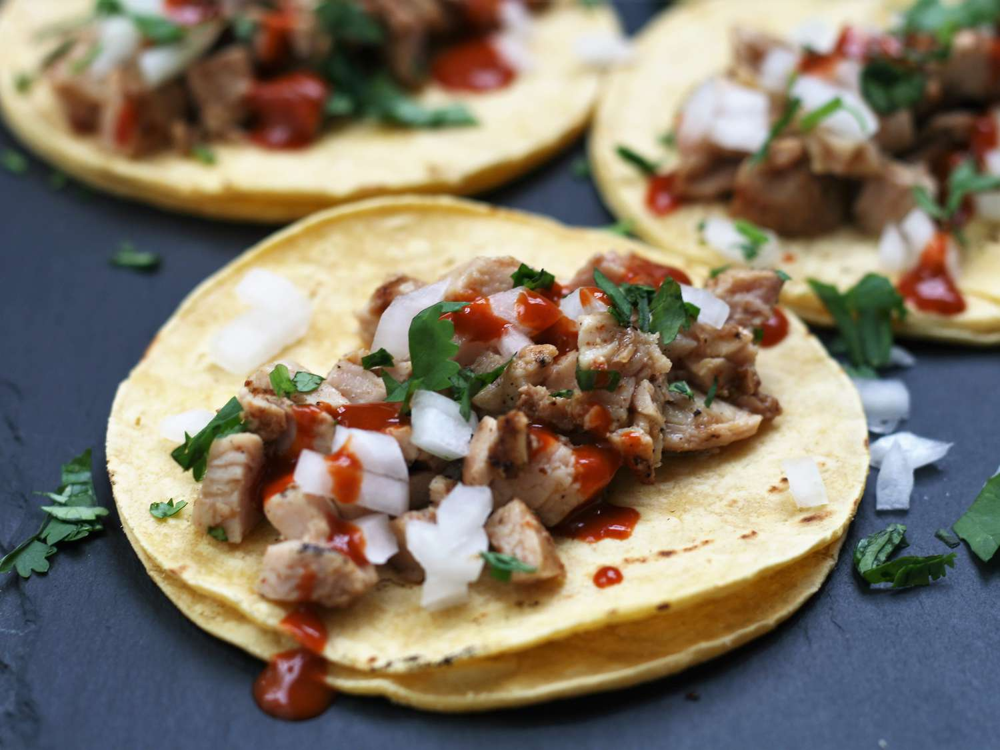

Chicken Street Tacos

About the recipe
This simple street taco recipe uses delicious preseasoned meat known as pollo para asar combined with the time-honored combination
of onions and cilantro to make a flavorful, easy dish.
Ingredients
- 1 Lb. pollo para asar (Seasoned, boneless, skinless chicken.)
- 1 onion, diced
- 1/2 cup chopped cilantro
- 8 corn tortillas
Instructions
- Preheat grill to medium-high heat and oil the grate.
- Grill chicken, turning occasionally until temperature reaches at least 165 degrees F.
- Heat corn tortillas until soft. Top with chicken, onions and cilantro.